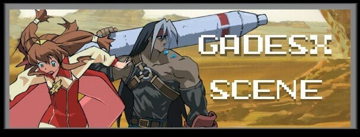
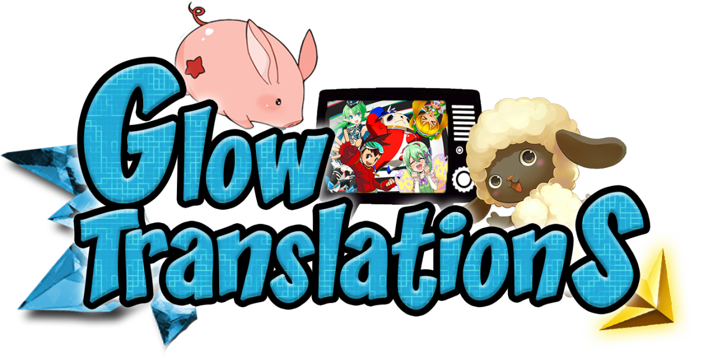
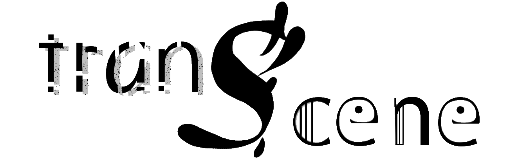

Inicio
Proyectos
Ni no Kuni: El mago de las tinieblas
Los monstruos atacan el viernes
Xenosaga I: Der Wille zur Macht
Contacto
Para cualquier duda, sugerencia, ayuda o cualquier otro tipo de cuestión, siempre puedes contactar con nosotros a través de nuestro Twitter o correo electrónico.
Tweets by GradienWords
GRUPOS AMIGOS


